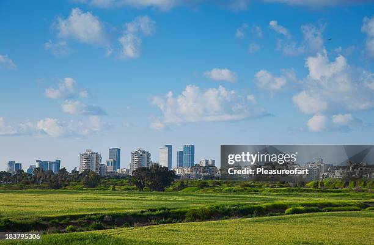
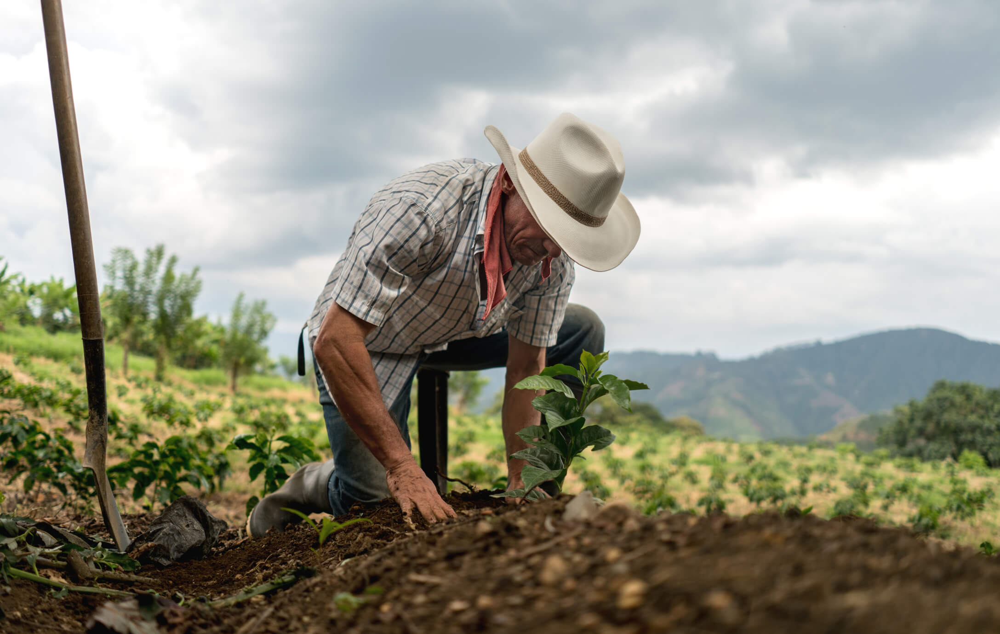

Economia e Produção
Do campo vêm os alimentos que abastecem mercados, feiras e restaurantes nas cidades. Essa parceria fortalece a economia local e promove o desenvolvimento sustentável.

Unindo culturas, saberes e alimentos!
A conexão entre o campo e a cidade é essencial para garantir uma vida equilibrada, sustentável e cheia de diversidade cultural. Celebrar essa união é valorizar o trabalho no campo e o consumo consciente nas cidades.
As festas típicas, a culinária, o artesanato e as danças são elementos que mostram como o campo influencia e enriquece a vida urbana.
Do campo vêm os alimentos que abastecem mercados, feiras e restaurantes nas cidades. Essa parceria fortalece a economia local e promove o desenvolvimento sustentável.
Com práticas agrícolas responsáveis e consumo consciente urbano, garantimos um futuro mais verde e justo para todos.
